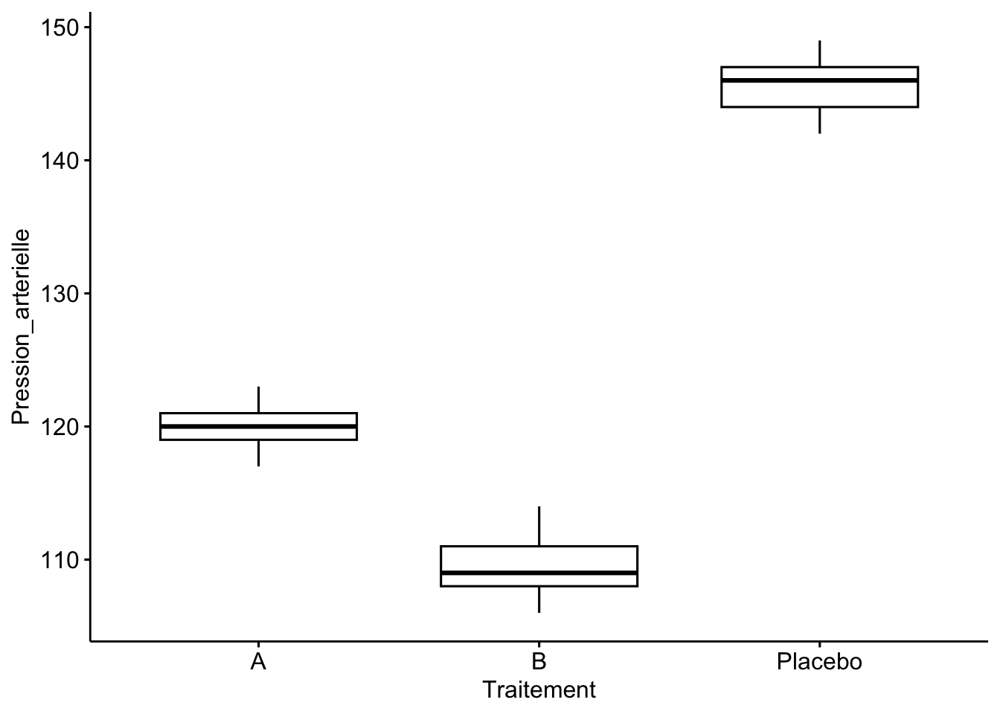
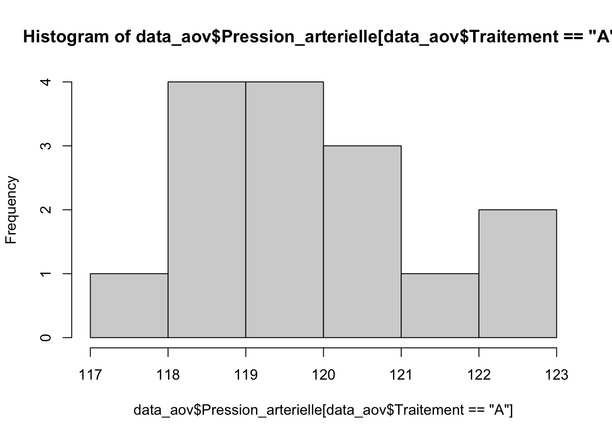
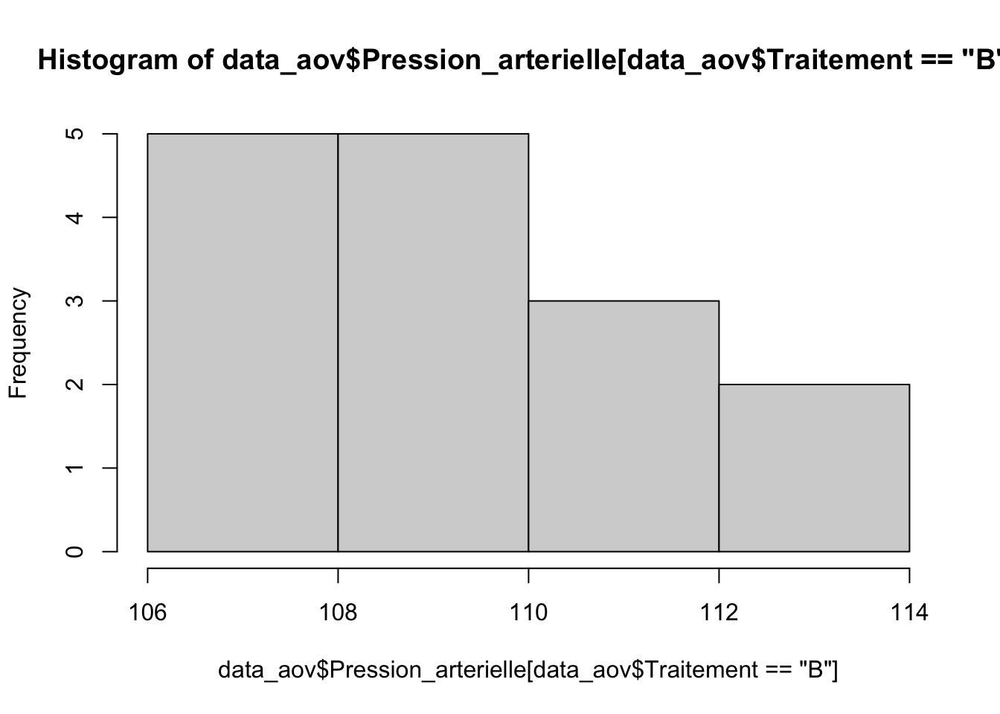
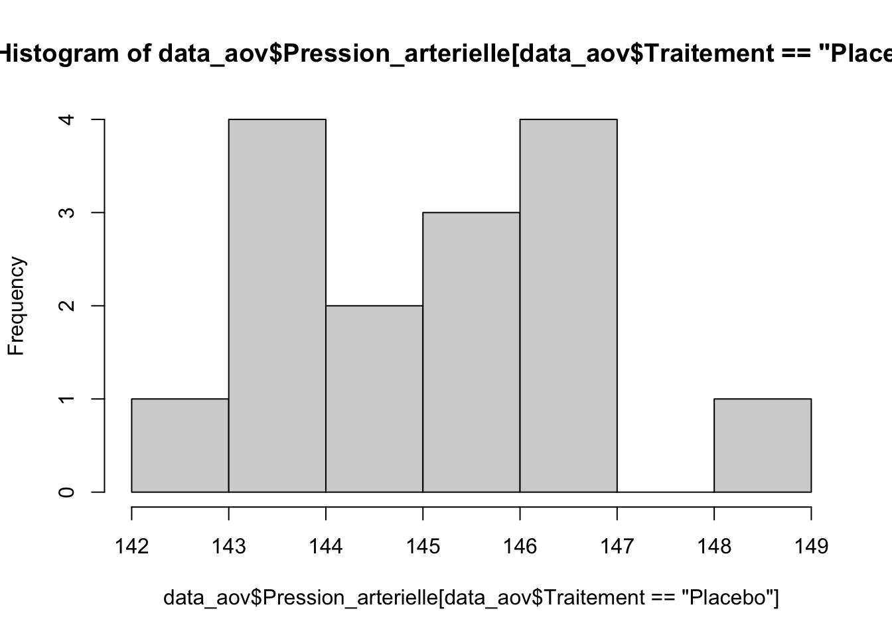
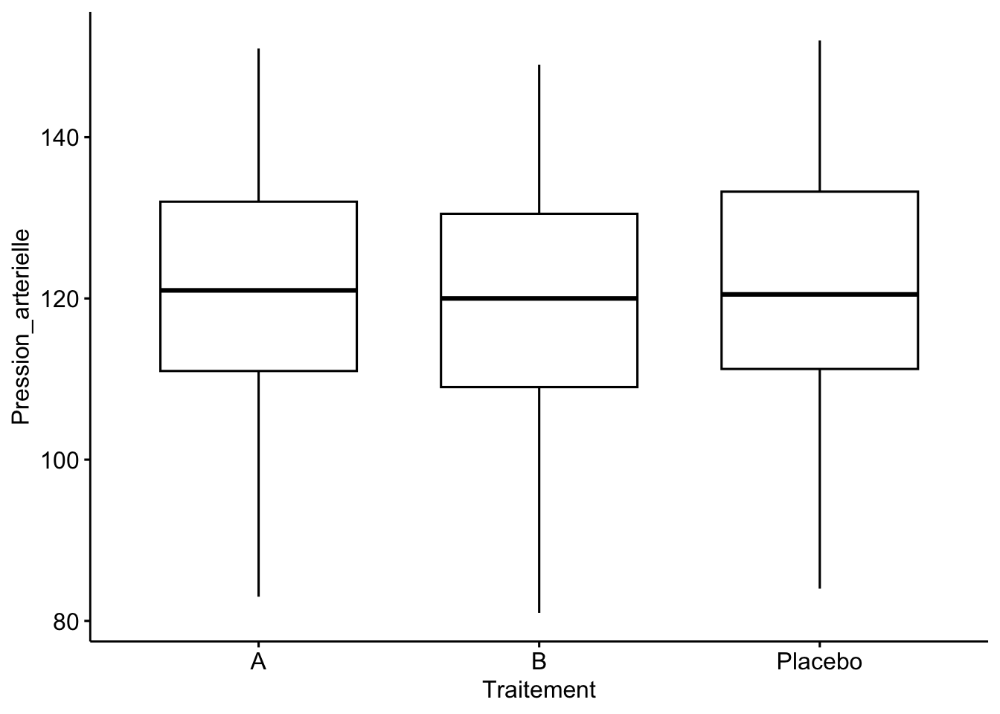
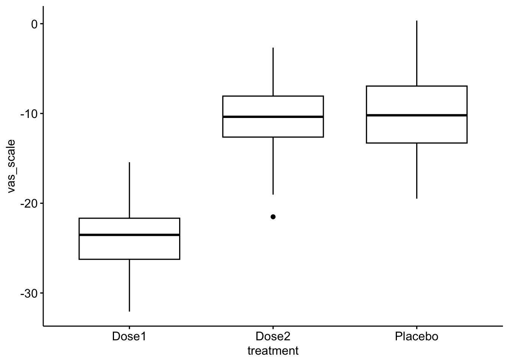
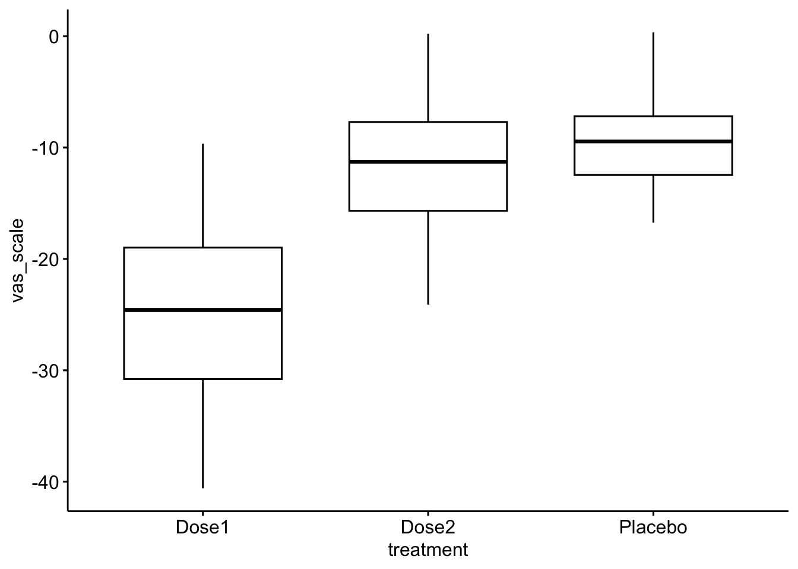
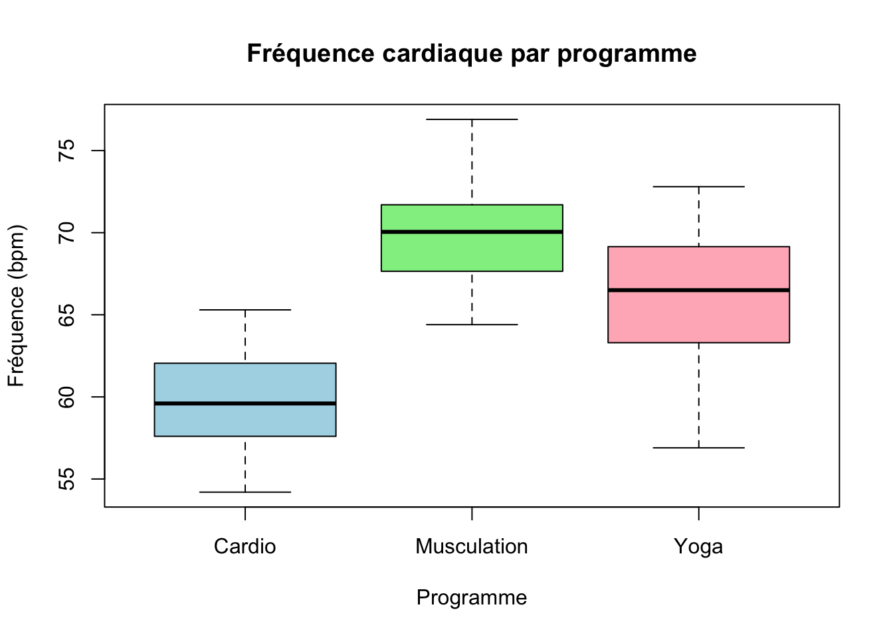
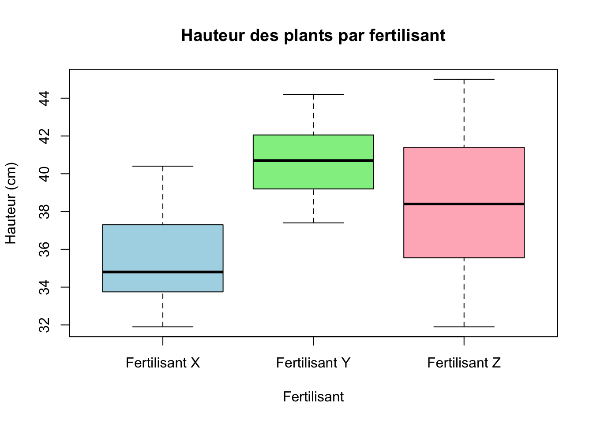

Last updated: 2026-03-08
Checks: 5 2
Knit directory: Data_Analysis/
This reproducible R Markdown analysis was created with workflowr (version 1.7.2). The Checks tab describes the reproducibility checks that were applied when the results were created. The Past versions tab lists the development history.
The R Markdown file has unstaged changes. To know which version of
the R Markdown file created these results, you’ll want to first commit
it to the Git repo. If you’re still working on the analysis, you can
ignore this warning. When you’re finished, you can run
wflow_publish to commit the R Markdown file and build the
HTML.
Great job! The global environment was empty. Objects defined in the global environment can affect the analysis in your R Markdown file in unknown ways. For reproduciblity it’s best to always run the code in an empty environment.
The command set.seed(20260226) was run prior to running
the code in the R Markdown file. Setting a seed ensures that any results
that rely on randomness, e.g. subsampling or permutations, are
reproducible.
Great job! Recording the operating system, R version, and package versions is critical for reproducibility.
Nice! There were no cached chunks for this analysis, so you can be confident that you successfully produced the results during this run.
Using absolute paths to the files within your workflowr project makes it difficult for you and others to run your code on a different machine. Change the absolute path(s) below to the suggested relative path(s) to make your code more reproducible.
| absolute | relative |
|---|---|
| /Users/thanhhuong/R/Data_Analysis | . |
Great! You are using Git for version control. Tracking code development and connecting the code version to the results is critical for reproducibility.
The results in this page were generated with repository version 894e205. See the Past versions tab to see a history of the changes made to the R Markdown and HTML files.
Note that you need to be careful to ensure that all relevant files for
the analysis have been committed to Git prior to generating the results
(you can use wflow_publish or
wflow_git_commit). workflowr only checks the R Markdown
file, but you know if there are other scripts or data files that it
depends on. Below is the status of the Git repository when the results
were generated:
Ignored files:
Ignored: .DS_Store
Ignored: .Rhistory
Ignored: .Rproj.user/
Ignored: analysis/.Rhistory
Unstaged changes:
Modified: analysis/ML_1.Rmd
Note that any generated files, e.g. HTML, png, CSS, etc., are not included in this status report because it is ok for generated content to have uncommitted changes.
These are the previous versions of the repository in which changes were
made to the R Markdown (analysis/ML_1.Rmd) and HTML
(docs/ML_1.html) files. If you’ve configured a remote Git
repository (see ?wflow_git_remote), click on the hyperlinks
in the table below to view the files as they were in that past version.
| File | Version | Author | Date | Message |
|---|---|---|---|---|
| Rmd | 83611de | Huong PHAM | 2026-03-08 | Update |
| html | 83611de | Huong PHAM | 2026-03-08 | Update |
| html | b77660e | Huong PHAM | 2026-03-08 | Build site. |
| html | 551fb64 | Huong PHAM | 2026-03-08 | Build site. |
| Rmd | 5217a4a | Huong PHAM | 2026-03-08 | Republish modified analyses |
| Rmd | ef88e31 | Huong PHAM | 2026-03-08 | 8 Mar |
| html | ef88e31 | Huong PHAM | 2026-03-08 | 8 Mar |
Considérons les résultats d’une étude clinique portant sur la comparaison de l’effet de deux anti- hypertenseurs et d’un placebo sur la pression artérielle. Nous disponsons d’un échantillon de 45 patients choisis au hasard, parmi lesquels 15 patients ont reçu l’anti-hypertenseur A, 15 patients ont reçu l’anti- hypertenseur B et 15 patients ont reçu le placebo. Pour chaque patient nous disposons de la pression artérielle systolique (en mmHg) 3 mois après l’initiation du traitement.
Importez le jeu de données data_aov.csv dans R. Puis mettez en forme les données.
setwd("/Users/thanhhuong/R/Data_Analysis")
data_aov <- read.csv("/Volumes/ORICO/Modèle Linaire/TD ANOVA I-20260121/data_aov.csv",sep = ",", dec = ".")
str(data_aov)'data.frame': 45 obs. of 3 variables:
$ X : int 1 2 3 4 5 6 7 8 9 10 ...
$ Pression_arterielle: int 119 120 123 120 120 123 121 117 119 119 ...
$ Traitement : chr "A" "A" "A" "A" ...data_aov$Traitement <- as.factor(data_aov$Traitement)
str(data_aov)'data.frame': 45 obs. of 3 variables:
$ X : int 1 2 3 4 5 6 7 8 9 10 ...
$ Pression_arterielle: int 119 120 123 120 120 123 121 117 119 119 ...
$ Traitement : Factor w/ 3 levels "A","B","Placebo": 1 1 1 1 1 1 1 1 1 1 ...Calculez la moyenne globale de la pression artérielle systolique, puis la moyenne par groupe. Représentez ces résultats graphiquement.
## 2. Statistiques descriptives
moyenne_globale <- mean(data_aov$Pression_arterielle)
moyenne_globale[1] 125.1556library(tidyverse) # Manipulation et visualisation des donnéesWarning: package 'ggplot2' was built under R version 4.4.3Warning: package 'tibble' was built under R version 4.4.3Warning: package 'tidyr' was built under R version 4.4.3Warning: package 'readr' was built under R version 4.4.3Warning: package 'purrr' was built under R version 4.4.3Warning: package 'dplyr' was built under R version 4.4.3Warning: package 'lubridate' was built under R version 4.4.3── Attaching core tidyverse packages ──────────────────────── tidyverse 2.0.0 ──
✔ dplyr 1.2.0 ✔ readr 2.1.6
✔ forcats 1.0.1 ✔ stringr 1.6.0
✔ ggplot2 4.0.2 ✔ tibble 3.3.1
✔ lubridate 1.9.5 ✔ tidyr 1.3.2
✔ purrr 1.2.1
── Conflicts ────────────────────────────────────────── tidyverse_conflicts() ──
✖ dplyr::filter() masks stats::filter()
✖ dplyr::lag() masks stats::lag()
ℹ Use the conflicted package (<http://conflicted.r-lib.org/>) to force all conflicts to become errorslibrary(rstatix) # Fonctions pour analyses statistiques
Attaching package: 'rstatix'
The following object is masked from 'package:stats':
filtermoyenne_groupe <- data_aov %>%
group_by(Traitement) %>%
get_summary_stats(Pression_arterielle, type = "mean_sd")
moyenne_groupe# A tibble: 3 × 5
Traitement variable n mean sd
<fct> <fct> <dbl> <dbl> <dbl>
1 A Pression_arterielle 15 120. 1.62
2 B Pression_arterielle 15 110. 2.22
3 Placebo Pression_arterielle 15 146. 1.77## Représentation graphique
library(ggpubr) # Réalisation de graphiques
ggboxplot(data_aov, x = "Traitement", y = "Pression_arterielle")
| Version | Author | Date |
|---|---|---|
| ef88e31 | Huong PHAM | 2026-03-08 |
## 3. Analyse de la variance
### Vérification des hypothèses
# Normalité
# Test de Shapiro-Wilk
data_aov %>%
group_by(Traitement)%>%
shapiro_test(Pression_arterielle)# A tibble: 3 × 4
Traitement variable statistic p
<fct> <chr> <dbl> <dbl>
1 A Pression_arterielle 0.941 0.395
2 B Pression_arterielle 0.970 0.865
3 Placebo Pression_arterielle 0.950 0.527# Tests de Kolmogorov-Smirnov
data_aov$Pression_arterielle2 <- jitter(data_aov$Pression_arterielle)
ks.test(data_aov$Pression_arterielle2[data_aov$Traitement == "A"],"pnorm", mean = 120, sd = 1.6)
Exact one-sample Kolmogorov-Smirnov test
data: data_aov$Pression_arterielle2[data_aov$Traitement == "A"]
D = 0.16869, p-value = 0.7264
alternative hypothesis: two-sidedks.test(data_aov$Pression_arterielle2[data_aov$Traitement == "B"], "pnorm", mean = 110, sd = 2.22)
Exact one-sample Kolmogorov-Smirnov test
data: data_aov$Pression_arterielle2[data_aov$Traitement == "B"]
D = 0.1774, p-value = 0.6691
alternative hypothesis: two-sidedks.test(data_aov$Pression_arterielle2[data_aov$Traitement == "Placebo"], "pnorm", mean = 146, sd = 1.8)
Exact one-sample Kolmogorov-Smirnov test
data: data_aov$Pression_arterielle2[data_aov$Traitement == "Placebo"]
D = 0.23241, p-value = 0.3386
alternative hypothesis: two-sided# Histogrammes
hist(data_aov$Pression_arterielle[data_aov$Traitement == "A"])
| Version | Author | Date |
|---|---|---|
| ef88e31 | Huong PHAM | 2026-03-08 |
hist(data_aov$Pression_arterielle[data_aov$Traitement == "B"])
| Version | Author | Date |
|---|---|---|
| ef88e31 | Huong PHAM | 2026-03-08 |
hist(data_aov$Pression_arterielle[data_aov$Traitement == "Placebo"])
| Version | Author | Date |
|---|---|---|
| ef88e31 | Huong PHAM | 2026-03-08 |
# Egalité des variances
data_aov %>%
levene_test(Pression_arterielle ~ Traitement)# A tibble: 1 × 4
df1 df2 statistic p
<int> <int> <dbl> <dbl>
1 2 42 0.704 0.500### Analyse
res.aov <- aov(Pression_arterielle ~ Traitement, data_aov)
summary(res.aov) Df Sum Sq Mean Sq F value Pr(>F)
Traitement 2 10186 5093 1426 <2e-16 ***
Residuals 42 150 4
---
Signif. codes: 0 '***' 0.001 '**' 0.01 '*' 0.05 '.' 0.1 ' ' 1res.aov2 <- data_aov %>% anova_test(Pression_arterielle ~ Traitement)
res.aov2ANOVA Table (type II tests)
Effect DFn DFd F p p<.05 ges
1 Traitement 2 42 1426.028 2.49e-39 * 0.985# La colonne ges représente la taille de l'effet, c'est à dire la proportion de la variabilité de la variable
# réponse (pression artérielle) qui peut être expliquée par la variable explicative (le traitement). Une valeur
# de 0.99 indique de 99% de la variance de la pression artérielle peut être attribuable au traitement.Trung bình HA tâm thu sau 3 tháng khác nhau rất mạnh giữa 3 nhóm: A khoảng 120 mmHg, B khoảng 110 mmHg, placebo khoảng 146 mmHg.
Các kiểm định Shapiro-Wilk trong từng nhóm đều không có ý nghĩa
thống kê và Levene test cũng không có ý nghĩa (p = 0.500),
nên giả định của ANOVA cổ điển nhìn chung được chấp nhận.
ANOVA cho kết quả F =
1426, p < 2e-16, với ges = 0.985,
nghĩa là hiệu ứng của điều trị là cực lớn. Kết luận: ở bộ dữ liệu này,
điều trị gần như giải thích hầu hết biến thiên của huyết áp.
## 4. Comparaisons 2 à 2
### a) sans correction pour la multiplicité
pwc <- data_aov %>% pairwise_t_test(Pression_arterielle ~ Traitement)
pwc# A tibble: 3 × 9
.y. group1 group2 n1 n2 p p.signif p.adj p.adj.signif
* <chr> <chr> <chr> <int> <int> <dbl> <chr> <dbl> <chr>
1 Pression_ar… A B 15 15 7.70e-19 **** 7.70e-19 ****
2 Pression_ar… A Place… 15 15 1.69e-33 **** 3.38e-33 ****
3 Pression_ar… B Place… 15 15 9.44e-40 **** 2.83e-39 **** ### b) Avec correction pour la multiplicité
pwc2 <- data_aov %>% pairwise_t_test(
Pression_arterielle ~ Traitement,
p.adjust.method = "bonferroni")
pwc2# A tibble: 3 × 9
.y. group1 group2 n1 n2 p p.signif p.adj p.adj.signif
* <chr> <chr> <chr> <int> <int> <dbl> <chr> <dbl> <chr>
1 Pression_ar… A B 15 15 7.70e-19 **** 2.31e-18 ****
2 Pression_ar… A Place… 15 15 1.69e-33 **** 5.06e-33 ****
3 Pression_ar… B Place… 15 15 9.44e-40 **** 2.83e-39 **** pwc2 <- data_aov %>% pairwise_t_test(
Pression_arterielle ~ Traitement,
p.adjust.method = "holm")
pwc2# A tibble: 3 × 9
.y. group1 group2 n1 n2 p p.signif p.adj p.adj.signif
* <chr> <chr> <chr> <int> <int> <dbl> <chr> <dbl> <chr>
1 Pression_ar… A B 15 15 7.70e-19 **** 7.70e-19 ****
2 Pression_ar… A Place… 15 15 1.69e-33 **** 3.38e-33 ****
3 Pression_ar… B Place… 15 15 9.44e-40 **** 2.83e-39 **** pwc3 <- data_aov %>% pairwise_t_test(
Pression_arterielle ~ Traitement,
p.adjust.method = "BH")
pwc3# A tibble: 3 × 9
.y. group1 group2 n1 n2 p p.signif p.adj p.adj.signif
* <chr> <chr> <chr> <int> <int> <dbl> <chr> <dbl> <chr>
1 Pression_ar… A B 15 15 7.70e-19 **** 7.70e-19 ****
2 Pression_ar… A Place… 15 15 1.69e-33 **** 2.53e-33 ****
3 Pression_ar… B Place… 15 15 9.44e-40 **** 2.83e-39 **** So sánh 2-2: tất cả các cặp đều khác biệt có ý nghĩa, kể cả sau Bonferroni, Holm hay BH. Về mặt lâm sàng thuần túy trên bộ số liệu này, B tốt nhất, A đứng giữa, placebo kém nhất. Không phải “có xu hướng”, mà là khác biệt rất rõ.
Les conditions d’application de l’ANOVA sont globalement satisfaites. L’analyse montre un effet très significatif du traitement sur la pression artérielle systolique (F(2,42)=1426.0, p<0.001). Les comparaisons post-hoc montrent que les trois groupes diffèrent significativement entre eux. Le traitement B est associé à la pression artérielle moyenne la plus basse, suivi du traitement A, tandis que le placebo présente la moyenne la plus élevée.
La même étude a été réalisé sur des patients présentant des caractéristiques différentes. Nous dis- posons, là aussi, d’un échantillon de 45 patients choisis au hasard, parmi lesquels 15 patients ont reçu l’anti-hypertenseur A, 15 patients ont reçu l’anti-hypertenseur B et 15 patients ont reçu le placebo. Pour chaque patient nous disposons de la pression artérielle systolique (en mmHg) 3 mois après l’initiation du traitement.
Importez le jeu de données data_aov2.csv dans R. Puis mettez en forme les données.
# - - - - - - - - - - - - - - - - - - - - - - - - - - - - - - - - - - - - - - - - - - - - #
# Exercice 2 #
## 1. IMportation du jeu de données et mise en forme
data_aov2 <- read.csv(file = "/Volumes/ORICO/Modèle Linaire/TD ANOVA I-20260121/data_aov2.csv",
sep = ";",
dec = ".")
str(data_aov2)'data.frame': 136 obs. of 2 variables:
$ Pression_arterielle: int 107 123 144 103 119 122 131 116 150 118 ...
$ Traitement : chr "A" "A" "A" "A" ...data_aov2$Traitement <- as.factor(data_aov2$Traitement)
str(data_aov2)'data.frame': 136 obs. of 2 variables:
$ Pression_arterielle: int 107 123 144 103 119 122 131 116 150 118 ...
$ Traitement : Factor w/ 3 levels "A","B","Placebo": 1 1 1 1 1 1 1 1 1 1 ...Calculez la moyenne globale de la pression artérielle systolique, puis la moyenne par groupe. Représentez ces résultats graphiquement.
## 2. Statistiques descriptives
moyenne_globale <- mean(data_aov2$Pression_arterielle)
moyenne_globale[1] 121.1029moyenne_groupe <- data_aov2 %>%
group_by(Traitement) %>%
get_summary_stats(Pression_arterielle, type = "mean_sd")
moyenne_groupe# A tibble: 3 × 5
Traitement variable n mean sd
<fct> <fct> <dbl> <dbl> <dbl>
1 A Pression_arterielle 45 121. 17.1
2 B Pression_arterielle 39 120. 16.9
3 Placebo Pression_arterielle 52 122. 17.3## Représentation graphique
ggboxplot(data_aov2, x = "Traitement", y = "Pression_arterielle")
| Version | Author | Date |
|---|---|---|
| ef88e31 | Huong PHAM | 2026-03-08 |
Après avoir vérifiez les hypothèses nécessaire à une analyse de la variance, réalisez cette analyse avec R. L’effet du traitement a-t-il un effet significatif sur la pression artérielle systolique ?
## 3. Analyse de la variance
### Vérification des hypothèses
# Normalité
data_aov2 %>%
group_by(Traitement)%>%
shapiro_test(Pression_arterielle)# A tibble: 3 × 4
Traitement variable statistic p
<fct> <chr> <dbl> <dbl>
1 A Pression_arterielle 0.978 0.542
2 B Pression_arterielle 0.979 0.661
3 Placebo Pression_arterielle 0.971 0.239# data_aov2 %>%
# group_by(Traitement)%>%
# ks_test(Pression_arterielle)
# Egalité des variances
data_aov2 %>%
levene_test(Pression_arterielle ~ Traitement)# A tibble: 1 × 4
df1 df2 statistic p
<int> <int> <dbl> <dbl>
1 2 133 0.0191 0.981### Analyse
res.aov <- aov(Pression_arterielle ~ Traitement, data_aov2)
summary(res.aov) Df Sum Sq Mean Sq F value Pr(>F)
Traitement 2 168 83.99 0.286 0.752
Residuals 133 39025 293.42 res.aov2 <- data_aov2 %>% anova_test(Pression_arterielle ~ Traitement)
res.aov2ANOVA Table (type II tests)
Effect DFn DFd F p p<.05 ges
1 Traitement 2 133 0.286 0.752 0.004Si cela est pertinent, effectuez des comparaisons deux à deux en utilisant les méthodes statistiques appropriées.
Trung bình 3 nhóm gần như chồng lên nhau: A
khoảng 121, B khoảng 120, placebo
khoảng 122 mmHg, với SD cũng gần tương tự nhau.
Shapiro-Wilk và Levene đều không gợi ý vi phạm giả định. ANOVA
cho F =
0.286, p = 0.752, ges = 0.004. Nghĩa
là không có bằng chứng cho thấy điều trị ảnh hưởng đến
HA tâm thu trong mẫu này. Hiệu ứng, nếu có, là rất nhỏ so với biến thiên
nội nhóm.
Ở đây không phải “ANOVA không chứng minh được điều trị hiệu quả”, mà chính xác hơn là không bác bỏ được H0 rằng các trung bình bằng nhau. Với kết quả này, post-hoc 2-2 không còn là bước cần thiết trong logic chuẩn của bài.
Interprétez les résultats.
Les moyennes observées dans les trois groupes sont très proches. Les hypothèses de normalité et d’homogénéité des variances sont respectées. L’ANOVA ne met pas en évidence d’effet significatif du traitement sur la pression artérielle systolique (F(2,133)=0.286, p=0.752). On ne peut donc pas conclure à une différence entre les groupes.
Nous souhaitons évaluer l’effet d’un nouveau traitement contre l’arthrose du genou comparativement à un placebo. Deux doses de ce traitement sont investiguées ainsi qu’un placebo. Pour chaque patient, la douleur causée par l’arthrose est évaluée sur base d’une échelle visuelle analogique (VAS) avant la prise du traitement et 1 mois après. Nous disposons de la différence avant-après du niveau de douleur pour chaque patient. Les données sont disponible dans le fichier knee_arthrosis.csv.
Importez le jeu de données dans R.
## 1. Importation des données
setwd("/Users/thanhhuong/R/Data_Analysis")
knee_arthrosis <- read.csv(file = "/Volumes/ORICO/Modèle Linaire/TD ANOVA I-20260121/knee_arthrosis.csv",
sep = ";",
dec = ".",
header = TRUE)
str(knee_arthrosis)'data.frame': 210 obs. of 2 variables:
$ vas_scale: num -12.7 -13.4 -11.2 -11.7 -16 ...
$ treatment: chr "Placebo" "Placebo" "Placebo" "Placebo" ...knee_arthrosis$treatment <- as.factor(knee_arthrosis$treatment)
str(knee_arthrosis)'data.frame': 210 obs. of 2 variables:
$ vas_scale: num -12.7 -13.4 -11.2 -11.7 -16 ...
$ treatment: Factor w/ 3 levels "Dose1","Dose2",..: 3 3 3 3 3 3 3 3 3 3 ...Quelle analyse statistique doit-on réaliser pour évaluer l’effet du nouveau traitement ? Pourquoi ?
## 2. Statistiques descriptives
### Analyse globale
moyenne_globale <- mean(knee_arthrosis$vas_scale)
moyenne_globale[1] -14.8131### Analyse par groupe
library(tidyverse) # Manipulation et visualisation des données
library(rstatix) # Fonctions pour analyses statistiques
moyenne_groupe <- knee_arthrosis %>%
group_by(treatment) %>%
get_summary_stats(vas_scale, type = "mean_sd")
moyenne_groupe# A tibble: 3 × 5
treatment variable n mean sd
<fct> <fct> <dbl> <dbl> <dbl>
1 Dose1 vas_scale 70 -23.8 3.76
2 Dose2 vas_scale 70 -10.7 3.84
3 Placebo vas_scale 70 -9.94 4.24## Représentation graphique
library(ggpubr) # Réalisation de graphiques
ggboxplot(knee_arthrosis, x = "treatment", y = "vas_scale")
| Version | Author | Date |
|---|---|---|
| ef88e31 | Huong PHAM | 2026-03-08 |
Réalisez des statistiques descriptives afin d’avoir un premier aperçue de l’information contenue dans les données.
Réalisez cette analyse avec R. Evaluez quelle est ou quelles sont les doses efficaces comparativement au placebo.
## 4. Analyse de la variance
### Vérification des hypothèses
# Normalité
# Tests de Kolmogorov-Smirnov
knee_arthrosis$vas_scale2 <- jitter(knee_arthrosis$vas_scale)
ks.test(knee_arthrosis$vas_scale2[knee_arthrosis$treatment == "Dose1"],"pnorm", mean = -24, sd = 3.8)
Exact one-sample Kolmogorov-Smirnov test
data: knee_arthrosis$vas_scale2[knee_arthrosis$treatment == "Dose1"]
D = 0.067338, p-value = 0.8875
alternative hypothesis: two-sidedks.test(knee_arthrosis$vas_scale2[knee_arthrosis$treatment == "Dose2"], "pnorm", mean = -10.7, sd = 3.8)
Exact one-sample Kolmogorov-Smirnov test
data: knee_arthrosis$vas_scale2[knee_arthrosis$treatment == "Dose2"]
D = 0.061831, p-value = 0.9366
alternative hypothesis: two-sidedks.test(knee_arthrosis$vas_scale2[knee_arthrosis$treatment == "Placebo"], "pnorm", mean = -9.9, sd = 4.2)
Exact one-sample Kolmogorov-Smirnov test
data: knee_arthrosis$vas_scale2[knee_arthrosis$treatment == "Placebo"]
D = 0.067642, p-value = 0.8843
alternative hypothesis: two-sided# Egalité des variances
knee_arthrosis %>%
levene_test(vas_scale ~ treatment)# A tibble: 1 × 4
df1 df2 statistic p
<int> <int> <dbl> <dbl>
1 2 207 1.18 0.308### Analyse
res.aov <- aov(vas_scale ~ treatment, knee_arthrosis)
summary(res.aov) Df Sum Sq Mean Sq F value Pr(>F)
treatment 2 8477 4238 270.9 <2e-16 ***
Residuals 207 3238 16
---
Signif. codes: 0 '***' 0.001 '**' 0.01 '*' 0.05 '.' 0.1 ' ' 1res.aov2 <- knee_arthrosis %>% anova_test(vas_scale ~ treatment)
res.aov2ANOVA Table (type II tests)
Effect DFn DFd F p p<.05 ges
1 treatment 2 207 270.912 1.6e-58 * 0.724## Comparaisons 2 à 2 avec correction pour tests multiples
levels(knee_arthrosis$treatment)[1] "Dose1" "Dose2" "Placebo"library(multcomp)Loading required package: mvtnormLoading required package: survivalWarning: package 'survival' was built under R version 4.4.3Loading required package: TH.dataWarning: package 'TH.data' was built under R version 4.4.3Loading required package: MASS
Attaching package: 'MASS'The following object is masked from 'package:rstatix':
selectThe following object is masked from 'package:dplyr':
select
Attaching package: 'TH.data'The following object is masked from 'package:MASS':
geysercontr <- rbind("Dose1 - Dose2" = c(1, -1, 0),
"Dose1 - Placebo" = c(1, 0, -1),
"Dose2 - Placebo" = c(0, 1, -1))
pwc2 <- glht(res.aov, linfct = mcp(treatment = contr))
pwc2
General Linear Hypotheses
Multiple Comparisons of Means: User-defined Contrasts
Linear Hypotheses:
Estimate
Dose1 - Dose2 == 0 -13.0791
Dose1 - Placebo == 0 -13.8434
Dose2 - Placebo == 0 -0.7643pwc2_pvalue <- knee_arthrosis %>% pairwise_t_test(
vas_scale ~ treatment,
p.adjust.method = "bonferroni")
pwc2_pvalue# A tibble: 3 × 9
.y. group1 group2 n1 n2 p p.signif p.adj p.adj.signif
* <chr> <chr> <chr> <int> <int> <dbl> <chr> <dbl> <chr>
1 vas_scale Dose1 Dose2 70 70 6.01e-49 **** 1.80e-48 ****
2 vas_scale Dose1 Placebo 70 70 2.47e-52 **** 7.4 e-52 ****
3 vas_scale Dose2 Placebo 70 70 2.54e- 1 ns 7.63e- 1 ns pwc3_pvalue <- knee_arthrosis %>% pairwise_t_test(
vas_scale ~ treatment,
p.adjust.method = "holm")
pwc3_pvalue# A tibble: 3 × 9
.y. group1 group2 n1 n2 p p.signif p.adj p.adj.signif
* <chr> <chr> <chr> <int> <int> <dbl> <chr> <dbl> <chr>
1 vas_scale Dose1 Dose2 70 70 6.01e-49 **** 1.20e-48 ****
2 vas_scale Dose1 Placebo 70 70 2.47e-52 **** 7.4 e-52 ****
3 vas_scale Dose2 Placebo 70 70 2.54e- 1 ns 2.54e- 1 ns pwc4_pvalue <- knee_arthrosis %>% pairwise_t_test(
vas_scale ~ treatment,
p.adjust.method = "BH")
pwc4_pvalue# A tibble: 3 × 9
.y. group1 group2 n1 n2 p p.signif p.adj p.adj.signif
* <chr> <chr> <chr> <int> <int> <dbl> <chr> <dbl> <chr>
1 vas_scale Dose1 Dose2 70 70 6.01e-49 **** 9.02e-49 ****
2 vas_scale Dose1 Placebo 70 70 2.47e-52 **** 7.4 e-52 ****
3 vas_scale Dose2 Placebo 70 70 2.54e- 1 ns 2.54e- 1 ns Que pouvez-vous conclure ?
Biến kết cục là chênh lệch đau VAS trước và sau điều
trị, và trong dữ liệu của bạn các giá trị đều âm. Theo cách mã
hóa này, có thể hiểu rằng giá trị càng âm thì mức giảm đau càng
lớn. Trung bình là: Dose1 =
-23.8, Dose2 = -10.7, Placebo =
-9.94. Giả định ANOVA cổ điển ổn: KS đều không có ý nghĩa,
Levene p = 0.308. ANOVA cho F =
270.9, p < 2e-16, ges = 0.724, tức
là hiệu ứng điều trị rất mạnh.
Điểm mấu chốt của câu hỏi không phải chỉ là ANOVA có ý
nghĩa, mà là “liều nào hiệu quả so với placebo”. Ở phần
pairwise sau hiệu chỉnh, Dose1 khác
Dose2 và Dose1 khác placebo với p cực nhỏ;
còn Dose2 không khác
placebo(p.adj ≈ 0.763, không có ý nghĩa). Vậy kết
luận chuẩn là: chỉ Dose1 chứng minh được hiệu quả vượt
placebo, còn Dose2 thì không.
=> L’ANOVA met en évidence un effet global très significatif du traitement sur l’évolution du score EVA (F(2,207)=270.9, p<0.001). Les comparaisons multiples montrent que la dose 1 diffère significativement de la dose 2 et du placebo, alors que la dose 2 ne diffère pas significativement du placebo. Ainsi, seule la dose 1 peut être considérée comme efficace par rapport au placebo.
La même étude a été réalisé sur un deuxième échantillon de patients présentant des caractéristiques différentes. Les données se trouvent dans le fichier knee_arthrosis2.csv. Réalisez l’analyse de ces nouvelles données. Que constatez-vous ?
## Importation des données
knee_arthrosis2 <- read.csv(file = "/Volumes/ORICO/Modèle Linaire/TD ANOVA I-20260121/knee_arthrosis2.csv",
sep = ";",
dec = ".",
header = TRUE)
str(knee_arthrosis2)'data.frame': 120 obs. of 2 variables:
$ vas_scale: num -12.7 -13.4 -11.2 -11.7 -16 ...
$ treatment: chr "Placebo" "Placebo" "Placebo" "Placebo" ...knee_arthrosis2$treatment <- as.factor(knee_arthrosis2$treatment)
str(knee_arthrosis2)'data.frame': 120 obs. of 2 variables:
$ vas_scale: num -12.7 -13.4 -11.2 -11.7 -16 ...
$ treatment: Factor w/ 3 levels "Dose1","Dose2",..: 3 3 3 3 3 3 3 3 3 3 ...## Statistiques descriptives
### Analyse globale
moyenne_globale <- mean(knee_arthrosis2$vas_scale)
moyenne_globale[1] -15.33617### Analyse par groupe
moyenne_groupe <- knee_arthrosis2 %>%
group_by(treatment) %>%
get_summary_stats(vas_scale, type = "mean_sd")
moyenne_groupe# A tibble: 3 × 5
treatment variable n mean sd
<fct> <fct> <dbl> <dbl> <dbl>
1 Dose1 vas_scale 40 -24.7 7.83
2 Dose2 vas_scale 40 -11.9 5.86
3 Placebo vas_scale 40 -9.43 3.71## Représentation graphique
ggboxplot(knee_arthrosis2, x = "treatment", y = "vas_scale")
| Version | Author | Date |
|---|---|---|
| ef88e31 | Huong PHAM | 2026-03-08 |
## Analyse de la variance
### Vérification des hypothèses
# Normalité
knee_arthrosis2 %>%
group_by(treatment)%>%
shapiro_test(vas_scale)# A tibble: 3 × 4
treatment variable statistic p
<fct> <chr> <dbl> <dbl>
1 Dose1 vas_scale 0.981 0.744
2 Dose2 vas_scale 0.980 0.683
3 Placebo vas_scale 0.984 0.845# Egalité des variances
knee_arthrosis2 %>%
levene_test(vas_scale ~ treatment)# A tibble: 1 × 4
df1 df2 statistic p
<int> <int> <dbl> <dbl>
1 2 117 10.5 0.0000656Trung bình các nhóm là Dose1 =
-24.7, Dose2 = -11.9, Placebo =
-9.43; Shapiro ổn nhưng Levene rất có ý nghĩa
(p = 0.0000656), nên không được dùng ANOVA cổ
điển.
=> Đổi sang Welch ANOVA.
Welch cho kết quả statistic =
61.2, p = 3.33e-16, nghĩa là vẫn có khác biệt toàn
cục giữa các nhóm.
### Analyse
res.aov3 <- knee_arthrosis2 %>% welch_anova_test(vas_scale ~ treatment)
res.aov3# A tibble: 1 × 7
.y. n statistic DFn DFd p method
* <chr> <int> <dbl> <dbl> <dbl> <dbl> <chr>
1 vas_scale 120 61.2 2 71.3 3.33e-16 Welch ANOVA## Comparaisons 2 à 2 avec correction pour tests multiples
moyenne_groupe$mean[1] - moyenne_groupe$mean[2] # Dose1 - Dose2[1] -12.735moyenne_groupe$mean[1] - moyenne_groupe$mean[3] # Dose1 - Placebo[1] -15.227moyenne_groupe$mean[2] - moyenne_groupe$mean[3] # Dose2 - Placebo[1] -2.492pwc2_value <- knee_arthrosis2 %>% pairwise_t_test(
vas_scale ~ treatment,
p.adjust.method = "bonferroni",
pool.sd = FALSE)
pwc2_value# A tibble: 3 × 10
.y. group1 group2 n1 n2 statistic df p p.adj p.adj.signif
* <chr> <chr> <chr> <int> <int> <dbl> <dbl> <dbl> <dbl> <chr>
1 vas_… Dose1 Dose2 40 40 -8.23 72.2 5.46e-12 1.64e-11 ****
2 vas_… Dose1 Place… 40 40 -11.1 55.6 9.48e-16 2.84e-15 ****
3 vas_… Dose2 Place… 40 40 -2.27 65.9 2.6 e- 2 7.9 e- 2 ns pwc3_value <- knee_arthrosis %>% pairwise_t_test(
vas_scale ~ treatment,
p.adjust.method = "holm",
pool.sd = FALSE)
pwc3_value# A tibble: 3 × 10
.y. group1 group2 n1 n2 statistic df p p.adj p.adj.signif
* <chr> <chr> <chr> <int> <int> <dbl> <dbl> <dbl> <dbl> <chr>
1 vas_… Dose1 Dose2 70 70 -20.3 138. 2.32e-43 6.96e-43 ****
2 vas_… Dose1 Place… 70 70 -20.4 136. 2.89e-43 6.96e-43 ****
3 vas_… Dose2 Place… 70 70 -1.12 137. 2.66e- 1 2.66e- 1 ns pwc4_value <- knee_arthrosis %>% pairwise_t_test(
vas_scale ~ treatment,
p.adjust.method = "BH",
pool.sd = FALSE)
pwc4_value# A tibble: 3 × 10
.y. group1 group2 n1 n2 statistic df p p.adj p.adj.signif
* <chr> <chr> <chr> <int> <int> <dbl> <dbl> <dbl> <dbl> <chr>
1 vas_… Dose1 Dose2 70 70 -20.3 138. 2.32e-43 4.34e-43 ****
2 vas_… Dose1 Place… 70 70 -20.4 136. 2.89e-43 4.34e-43 ****
3 vas_… Dose2 Place… 70 70 -1.12 137. 2.66e- 1 2.66e- 1 ns Une étude s’intéresse à l’effet de trois programmes sportifs (Yoga, Cardio, Musculation) sur la fré- quence cardiaque au repos après 8 semaines d’entraînement. Un total de 60 volontaires a été réparti aléatoirement en trois groupes de 20 personnes chacun. La fréquence cardiaque (en battements par mi- nute) a été mesurée à la fin des 8 semaines.
1. Importez le fichier “frequence_cardiaque.csv” dans R et mettez en forme le jeu de données si nécessaire.
# 1. Importation et mise en forme des données
data1 <- read.csv("/Volumes/ORICO/Modèle Linaire/TD ANOVA I-20260121/Exercices supplémentaires-20260308/frequence_cardiaque.csv",
sep = ",",
dec = ".",
header = TRUE)
str(data1)'data.frame': 60 obs. of 2 variables:
$ Programme : chr "Yoga" "Yoga" "Yoga" "Yoga" ...
$ Frequence_bpm: num 62.3 63 67.5 67.3 70.4 71.5 66.2 66.8 63.6 63.7 ...data1$Programme <- as.factor(data1$Programme)
str(data1)'data.frame': 60 obs. of 2 variables:
$ Programme : Factor w/ 3 levels "Cardio","Musculation",..: 3 3 3 3 3 3 3 3 3 3 ...
$ Frequence_bpm: num 62.3 63 67.5 67.3 70.4 71.5 66.2 66.8 63.6 63.7 ...2. Calculez la moyenne générale et les moyennes par programme. Que remarquez-vous ?
# 2. Statistiques descriptives
mean(data1$Frequence_bpm)[1] 65.27833data1 %>%
group_by(Programme) %>%
summarise(
Moyenne = mean(Frequence_bpm),
SD = sd(Frequence_bpm),
n = n()
)# A tibble: 3 × 4
Programme Moyenne SD n
<fct> <dbl> <dbl> <int>
1 Cardio 59.7 3.32 20
2 Musculation 70.0 3.44 20
3 Yoga 66.1 4.32 203. Représentez graphiquement la distribution des fréquences cardiaques par groupe.
# 3. Représentation graphique des données
boxplot(Frequence_bpm ~ Programme, data = data1,
main = "Fréquence cardiaque par programme",
xlab = "Programme", ylab = "Fréquence (bpm)",
col = c("lightblue", "lightgreen", "lightpink"))
| Version | Author | Date |
|---|---|---|
| 551fb64 | Huong PHAM | 2026-03-08 |
4. Formulez l’hypothèse nulle et l’hypothèse alternative adaptées à ce contexte.
5. Réalisez une ANOVA à un facteur pour tester si le programme sportif influence la fréquence cardiaque au repos. N’oubliez de vérifier les hypothèses sous-jacentes avant de tirer des conclusions.
# 4. ANOVA I
## a. Vérification des hypothèses
# Normalité par groupe
data1 %>% group_by(Programme) %>% shapiro_test(Frequence_bpm)# A tibble: 3 × 4
Programme variable statistic p
<fct> <chr> <dbl> <dbl>
1 Cardio Frequence_bpm 0.959 0.519
2 Musculation Frequence_bpm 0.959 0.532
3 Yoga Frequence_bpm 0.974 0.831# Égalité des variances
levene_test(Frequence_bpm ~ Programme, data = data1)# A tibble: 1 × 4
df1 df2 statistic p
<int> <int> <dbl> <dbl>
1 2 57 1.07 0.350# Analyse
anova1 <- aov(Frequence_bpm ~ Programme, data = data1)
summary(anova1) Df Sum Sq Mean Sq F value Pr(>F)
Programme 2 1082.4 541.2 39.18 1.97e-11 ***
Residuals 57 787.3 13.8
---
Signif. codes: 0 '***' 0.001 '**' 0.01 '*' 0.05 '.' 0.1 ' ' 1# Comparaison 2 à 2
data1 %>% pairwise_t_test(
Frequence_bpm ~ Programme,
p.adjust.method = "bonferroni")# A tibble: 3 × 9
.y. group1 group2 n1 n2 p p.signif p.adj p.adj.signif
* <chr> <chr> <chr> <int> <int> <dbl> <chr> <dbl> <chr>
1 Frequence_b… Cardio Muscu… 20 20 3.76e-12 **** 1.13e-11 ****
2 Frequence_b… Cardio Yoga 20 20 1.07e- 6 **** 3.21e- 6 ****
3 Frequence_b… Muscu… Yoga 20 20 1.66e- 3 ** 4.99e- 3 ** 6. Si l’effet est significatif, effectuez des comparaisons 2 à 2 afin d’identifier quels groupes diffèrent entre eux.
Un essai agronomique compare trois fertilisants (Fertilisant X, Fertilisant Y, Fertilisant Z) sur la croissance de plants de tomates. Quarante-cinq plants ont été répartis en trois groupes de 15. Après 6 semaines, la hauteur des plants (en cm) a été mesurée.
1. Importez dans R le fichier croissance_plantes.csv et mettez en forme les données si nécessaire.
# 1. Importation et mise en forme des données
data2 <- read.csv("/Volumes/ORICO/Modèle Linaire/TD ANOVA I-20260121/Exercices supplémentaires-20260308/croissance_plantes.csv",
sep = ",",
dec = ".",
header = TRUE)
str(data2)'data.frame': 45 obs. of 2 variables:
$ Fertilisant: chr "Fertilisant X" "Fertilisant X" "Fertilisant X" "Fertilisant X" ...
$ Hauteur_cm : num 33.5 35.8 34.2 34.8 31.9 34 37 33.1 34.6 40.4 ...data2$Fertilisant <- as.factor(data2$Fertilisant)
str(data2)'data.frame': 45 obs. of 2 variables:
$ Fertilisant: Factor w/ 3 levels "Fertilisant X",..: 1 1 1 1 1 1 1 1 1 1 ...
$ Hauteur_cm : num 33.5 35.8 34.2 34.8 31.9 34 37 33.1 34.6 40.4 ...2. Calculez la moyenne globale et les moyennes par fertilisant. Que suggèrent ces résultats ?
# 2. Statistiques descriptives
mean(data2$Hauteur_cm)[1] 38.12889data2 %>%
group_by(Fertilisant) %>%
summarise(
Moyenne = mean(Hauteur_cm),
SD = sd(Hauteur_cm),
n = n()
)# A tibble: 3 × 4
Fertilisant Moyenne SD n
<fct> <dbl> <dbl> <int>
1 Fertilisant X 35.4 2.41 15
2 Fertilisant Y 40.5 2.15 15
3 Fertilisant Z 38.5 4.14 153. Choisissez un graphique pertinent pour visualiser les différences entre groupes et justifiez ce choix.
# 3. Représentation graphique des données
boxplot(Hauteur_cm ~ Fertilisant, data = data2,
main = "Hauteur des plants par fertilisant",
xlab = "Fertilisant", ylab = "Hauteur (cm)",
col = c("lightblue", "lightgreen", "lightpink"))
| Version | Author | Date |
|---|---|---|
| 551fb64 | Huong PHAM | 2026-03-08 |
4. Rappelez les prérequis de l’ANOVA dans ce cas et vérifiez-les à l’aide de R.
# 4. Vérification des hypothèses
## a. Normalité
data2 %>% group_by(Fertilisant) %>% shapiro_test(Hauteur_cm)# A tibble: 3 × 4
Fertilisant variable statistic p
<fct> <chr> <dbl> <dbl>
1 Fertilisant X Hauteur_cm 0.962 0.730
2 Fertilisant Y Hauteur_cm 0.957 0.632
3 Fertilisant Z Hauteur_cm 0.958 0.655## b. Egalité des variance
levene_test(Hauteur_cm ~ Fertilisant, data = data2)# A tibble: 1 × 4
df1 df2 statistic p
<int> <int> <dbl> <dbl>
1 2 42 4.02 0.02545. Effectuez l’analyse adapté afin d’évaluer l’effet des fertilisant sur la croissance des plans de tomates, puis interprétez la statistique F et la p-valeur dans le contexte de l’essai.
# 5. ANOVA de Welch (car les variances ne sont pas égales)
anova2 <- data2 %>% welch_anova_test(Hauteur_cm ~ Fertilisant)
anova2# A tibble: 1 × 7
.y. n statistic DFn DFd p method
* <chr> <int> <dbl> <dbl> <dbl> <dbl> <chr>
1 Hauteur_cm 45 18.6 2 26.7 0.0000088 Welch ANOVA6. Si nécessaire, réalisez des comparaisons 2 à 2 en testant différentes méthodes de correction pour tests multiples et discutez de leur utilité pour la conclusion agronomique.
# 6. Comparaison 2 à 2 avec correction pour multiplicité
data2 %>% pairwise_t_test(
Hauteur_cm ~ Fertilisant,
p.adjust.method = "BH",
pool.sd = FALSE)# A tibble: 3 × 10
.y. group1 group2 n1 n2 statistic df p p.adj p.adj.signif
* <chr> <chr> <chr> <int> <int> <dbl> <dbl> <dbl> <dbl> <chr>
1 Hauteu… Ferti… Ferti… 15 15 -6.17 27.6 1.23e-6 3.69e-6 ****
2 Hauteu… Ferti… Ferti… 15 15 -2.52 22.5 1.9 e-2 2.9 e-2 *
3 Hauteu… Ferti… Ferti… 15 15 1.68 21.0 1.07e-1 1.07e-1 ns data2 %>% pairwise_t_test(
Hauteur_cm ~ Fertilisant,
p.adjust.method = "bonferroni",
pool.sd = FALSE)# A tibble: 3 × 10
.y. group1 group2 n1 n2 statistic df p p.adj p.adj.signif
* <chr> <chr> <chr> <int> <int> <dbl> <dbl> <dbl> <dbl> <chr>
1 Hauteu… Ferti… Ferti… 15 15 -6.17 27.6 1.23e-6 3.69e-6 ****
2 Hauteu… Ferti… Ferti… 15 15 -2.52 22.5 1.9 e-2 5.7 e-2 ns
3 Hauteu… Ferti… Ferti… 15 15 1.68 21.0 1.07e-1 3.21e-1 ns
sessionInfo()R version 4.4.2 (2024-10-31)
Platform: aarch64-apple-darwin20
Running under: macOS Ventura 13.6.3
Matrix products: default
BLAS: /Library/Frameworks/R.framework/Versions/4.4-arm64/Resources/lib/libRblas.0.dylib
LAPACK: /Library/Frameworks/R.framework/Versions/4.4-arm64/Resources/lib/libRlapack.dylib; LAPACK version 3.12.0
locale:
[1] en_US.UTF-8/en_US.UTF-8/en_US.UTF-8/C/en_US.UTF-8/en_US.UTF-8
time zone: Europe/Paris
tzcode source: internal
attached base packages:
[1] stats graphics grDevices utils datasets methods base
other attached packages:
[1] multcomp_1.4-29 TH.data_1.1-5 MASS_7.3-65 survival_3.8-6
[5] mvtnorm_1.3-3 ggpubr_0.6.2 rstatix_0.7.3 lubridate_1.9.5
[9] forcats_1.0.1 stringr_1.6.0 dplyr_1.2.0 purrr_1.2.1
[13] readr_2.1.6 tidyr_1.3.2 tibble_3.3.1 ggplot2_4.0.2
[17] tidyverse_2.0.0
loaded via a namespace (and not attached):
[1] gtable_0.3.6 xfun_0.56 bslib_0.10.0 lattice_0.22-9
[5] tzdb_0.5.0 vctrs_0.7.1 tools_4.4.2 generics_0.1.4
[9] sandwich_3.1-1 pkgconfig_2.0.3 Matrix_1.7-4 RColorBrewer_1.1-3
[13] S7_0.2.1 lifecycle_1.0.5 compiler_4.4.2 farver_2.1.2
[17] git2r_0.36.2 codetools_0.2-20 carData_3.0-6 httpuv_1.6.16
[21] htmltools_0.5.9 sass_0.4.10 yaml_2.3.12 Formula_1.2-5
[25] later_1.4.6 pillar_1.11.1 car_3.1-5 jquerylib_0.1.4
[29] whisker_0.4.1 cachem_1.1.0 abind_1.4-8 tidyselect_1.2.1
[33] digest_0.6.39 stringi_1.8.7 labeling_0.4.3 splines_4.4.2
[37] rprojroot_2.1.1 fastmap_1.2.0 grid_4.4.2 cli_3.6.5
[41] magrittr_2.0.4 utf8_1.2.6 broom_1.0.12 withr_3.0.2
[45] scales_1.4.0 promises_1.5.0 backports_1.5.0 timechange_0.4.0
[49] rmarkdown_2.30 otel_0.2.0 ggsignif_0.6.4 workflowr_1.7.2
[53] zoo_1.8-15 hms_1.1.4 evaluate_1.0.5 knitr_1.51
[57] rlang_1.1.7 Rcpp_1.1.1 glue_1.8.0 rstudioapi_0.18.0
[61] jsonlite_2.0.0 R6_2.6.1 fs_1.6.6